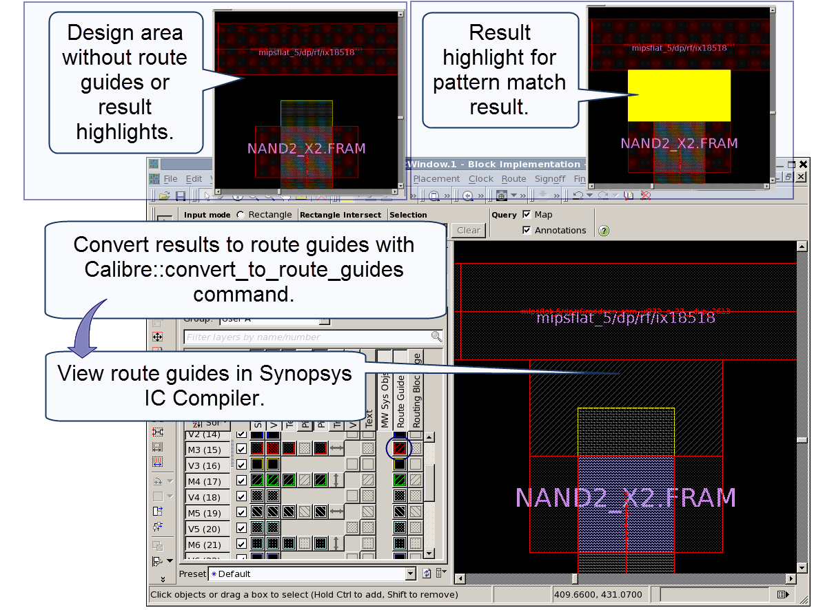

You can convert
results from an ASCII format Calibre results database (RDB) to Synopsys
IC Compiler route guides. The conversion process automatically imports
the route guides to the Synopsys IC Compiler session. You can use
Zroute with the new route guides to repair violations.
Procedure
- Make the cell containing the
results you want to convert the working design in Synopsys IC Compiler.
Route guides are created in the CEL view. The design should be writable,
otherwise the generated route guides cannot be saved.
- (Optional) If you have already
converted route guides during the current session, you must remove
them before doing another conversion. Use the following command
at the icc_shell prompt to remove route guides created by the RDB conversion
process:
icc_shell> remove_route_guide mgc_rve*
- Issue the Calibre::convert_to_route_guides command at the icc_shell prompt.
Suppose your RDB is named drc.results and the
check map file is named map.
Use the following command to convert all results for check m3_pattern
(the default):
icc_shell> Calibre::convert_to_route_guides drc.results -check_map_file map
‑checks m3_pattern
To convert results for rule
check m3_pattern in cell block1:
icc_shell> Calibre::convert_to_route_guides drc.results -check_map_file map
‑cell block1 ‑checks m3_pattern
Refer to “Calibre::convert_to_route_guides” and “Configuring Calibre RDB Conversion to Native Place and Route Format” for details. You can specify
options for side RDBs, x- and y-offset, and other parameters.
Tip Some physical
verification flows apply an offset to the design before verification.
Use the -offset option to correct for the offset so that the results
are displayed correctly in the original design.
The following message is written
to the transcript after successful conversion:
// RDB written as PR input file <filename>
- View the route guides in Synopsys
IC Compiler. You may need to enable route guide visibility.
You can run the Synopsys Zroute
router with the new route guides to attempt to repair the violations.
Results
Route guides are created as rectangular
objects on the target layer(s) specified in the check map file.
See the Calibre::convert_to_route_guides command reference for details
on how the route guides are generated from non-rectangular result
shapes.
Figure 1. Calibre Result Converted
to Route Guide